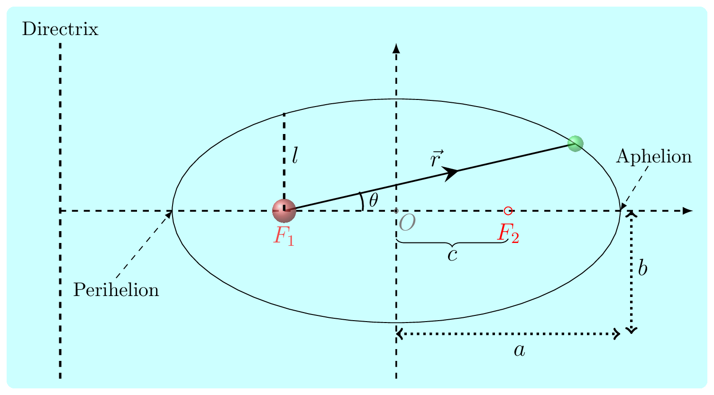

From Newton’s Law of Gravitation and Newton’s II law of motion.
\begin{equation}
\vec{F} = -\frac{GMm}{r^2}\hat{r}\tag{1.2.1}
\end{equation}
\begin{equation}
\vec{F} =m\vec{a_r}\tag{1.2.2}
\end{equation}
\begin{equation*}
or, \quad m (\ddot{r} -r\dot{\theta}^2)\hat{r} = -\frac{GMm}{r^2}\hat{r}
\end{equation*}
\begin{equation}
\ddot{r} -r\dot{\theta}^2 = -\frac{GM}{r^2}\tag{1.2.3}
\end{equation}
From principle of conservation of angular momentum:
\begin{align*}
\vec{L} \amp =\vec{r}\times\vec{p} = m(\vec{r}\times\vec{v}) \\
\amp = m[\vec{r}\times (\dot{r}\hat{r}+r\dot{\theta}\hat{\theta})] \\
\amp = m[\vec{r}\times r\dot{\theta}\hat{\theta}] = mr^2[\hat{r}\times\dot{\theta}\hat{\theta}] = mr^2\dot{\theta}
\end{align*}
using
(1.1.4) and
\(\quad \because \hat{r}\times\hat{\theta} = \sin(90)=\hat{n} \quad \) and
\(\quad \hat{r}\times\hat{r} = \sin(0)=0\)
\begin{equation}
\therefore \dot{\theta} = \frac{L}{mr^2}\tag{1.2.4}
\end{equation}
For convenience let’s say
\begin{equation}
\frac{L}{m}=h\tag{1.2.5}
\end{equation}
Also to solve
(1.2.3) we need to change the variable
\(r\) to its inverse,
\begin{equation}
\frac{1}{r}=u\tag{1.2.6}
\end{equation}
and then change the variable \(t\) to \(\theta\text{.}\) This mathematical trick was adopted by Bernaulli to solve differential equation of variable coefficient such as
\begin{equation*}
\frac{dy}{dx}+p(x)y=q(x)y^n
\end{equation*}
here
\(u=y^{(1-n)}\text{.}\) In
(1.2.3) \(n=2\) as power of
\(r.\)
Hence, differentiate
(1.2.6) with respect to
\('t'.\)
\begin{align*}
-\frac{1}{r^2}\frac{\,dr}{\,dt} \amp = \frac{\,du}{\,dt} \\
\amp =\frac{\,du}{\,d\theta} \frac{\,d\theta}{\,dt} \quad \text{(chain rule)}\\
or, \quad \dot{r} \amp =-\frac{1}{u^2}\dot{\theta}\frac{\,du}{\,d\theta}
\end{align*}
\begin{equation}
\therefore \quad \dot{r} = -h\frac{\,du}{\,d\theta}\tag{1.2.7}
\end{equation}
\begin{equation}
\dot{\theta}= \frac{L}{mr^2}=hu^2\tag{1.2.8}
\end{equation}
Differentiate
(1.2.7) w.r. t.
\('t'\) again, we get -
\begin{align*}
\ddot{r} \amp =-h\frac{\,d}{\,dt}(\frac{\,du}{\,d\theta}) \\
\amp =-h\frac{\,d}{\,d\theta}(\frac{\,du}{\,d\theta})\frac{\,d\theta}{\,dt}\\
\amp =-h\dot{\theta}\frac{\,d^2 u}{\,d\theta^2}
\end{align*}
\begin{equation}
\therefore \quad \ddot{r} =-h^2u^2\frac{\,d^2 u}{\,d\theta^2}\tag{1.2.9}
\end{equation}
\begin{equation*}
-h^2u^2\frac{\,d^2 u}{\,d\theta^2} - \frac{1}{u}(h^2u^4)=-GMu^2
\end{equation*}
\begin{equation*}
or,\quad \frac{\,d^2 u}{\,d\theta^2} +u =\frac{GM}{h^2} =\frac{k}{h^2} \quad (say)
\end{equation*}
assume \(k=GM\)
\begin{equation*}
or, \quad \frac{\,d^2}{\,d\theta^2} (u-\frac{k}{h^2}) + (u-\frac{k}{h^2}) =0
\end{equation*}
Again say,
\begin{equation}
u-\frac{k}{h^2} = y\tag{1.2.10}
\end{equation}
\begin{equation}
\therefore \quad \frac{\,d^2 y}{\,d\theta^2}+y =0\tag{1.2.11}
\end{equation}
This is homogeneous second order linear differential equation with constant coefficient. The solution of which can be given as
\begin{equation}
y = A\cos\theta\tag{1.2.12}
\end{equation}
where \(A\) is an arbitrary constant whose value can be determined by initial condition. There are other possible solution to this equation as well such as \(y=A\cos\theta+B\sin\theta \) or simply \(y =B\sin\theta.\)
\begin{align*}
or, \quad u - \frac{k}{h^2} \amp = A\cos\theta\\
u \amp =\frac{k}{h^2}+A\cos\theta \\
\amp = \frac{k}{h^2}[1+\frac{Ah^2}{k}\cos\theta] \\
\amp = \frac{k}{h^2}[1+e\cos\theta]
\end{align*}
\begin{equation*}
or,\quad \frac{1}{r}=\frac{k}{h^2}[1+e\cos\theta]
\end{equation*}
\begin{equation*}
or,\quad r = \frac{h^2}{k}[\frac{1}{1+e\cos\theta}]
\end{equation*}
\begin{equation}
\therefore \quad r=\frac{l}{1+e\cos\theta}\tag{1.2.13}
\end{equation}
The
(1.2.13) is equation of conic section, where
\(e=0,\) represents circle,
\(0\lt e \lt 1\) represents ellipse,
\(e=1,\) is parabola, and
\(e\gt 1 \) represents hyperbola. In
(1.2.13)
\begin{equation}
e = \frac{Ah^2}{k} = \frac{AL^2}{GMm^2} = eccentricity.\tag{1.2.14}
\end{equation}
and
\begin{equation}
l = \frac{h^2}{k} =\frac{L^2}{GMm^2}=\quad \text{semi-latus rectum}\tag{1.2.15}
\end{equation}
If
(1.2.13) is an equation of ellipse then
\begin{equation*}
e = \sqrt{1-\frac{b^2}{a^2}}
\end{equation*}
So let’s prove it.
Proof.
In ellipse semi-major axis \(a\) is the arithmatic mean of \(r_{max}\) and \(r_{min}\text{.}\)
\begin{equation*}
\therefore \quad a=\frac{1}{2}[r_{max}+r_{min}] = \frac{1}{2}[\frac{l}{1-e}+\frac{l}{1+e}]
\end{equation*}
At
\(\theta = 0\) and
\(\pi\) from
(1.2.13).
\begin{equation}
\therefore \quad a = \frac{l}{1-e^2}\tag{1.2.16}
\end{equation}
also semi-minor axis \(b\) is a geometric mean of \(r_{max}\) and \(r_{min}\text{.}\)
\begin{equation}
\therefore \quad b^2 = r_{max}r_{min} = \frac{l^2}{1-e^2}\tag{1.2.17}
\end{equation}
\begin{equation*}
or,\quad b^2 = \frac{l^2(1-e^2)}{(1-e^2)^2} = a^2(1-e^2)
\end{equation*}
\begin{equation}
or, \quad \frac{b^2}{a^2} = 1-e^2\tag{1.2.18}
\end{equation}
\begin{equation}
\therefore \quad e = \sqrt{1-\frac{b^2}{a^2}}\tag{1.2.19}
\end{equation}